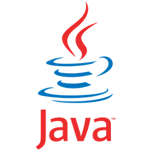
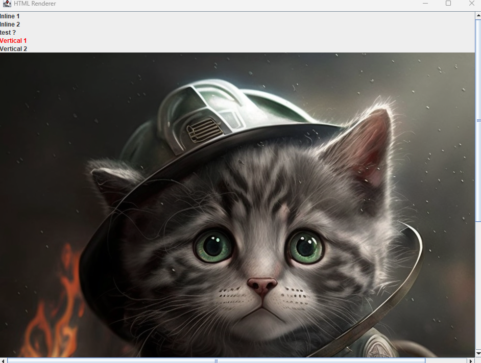
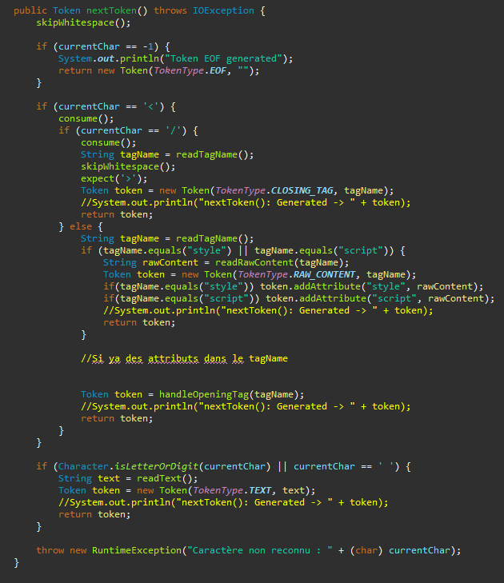
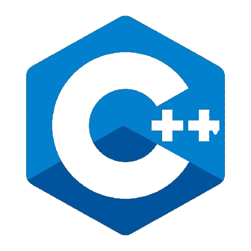
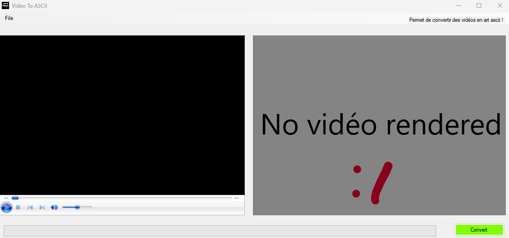
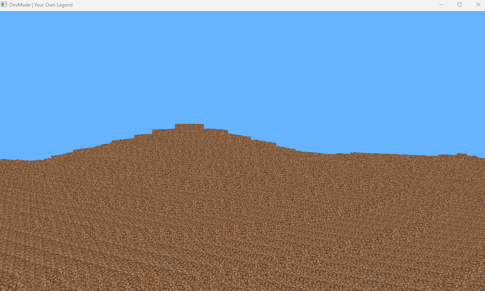
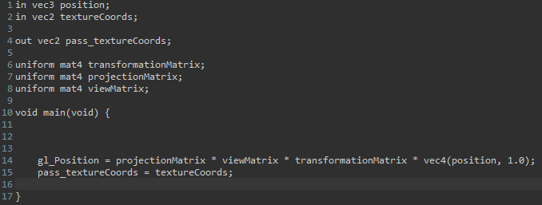
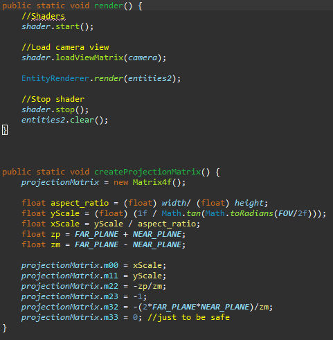
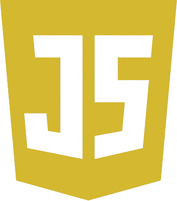
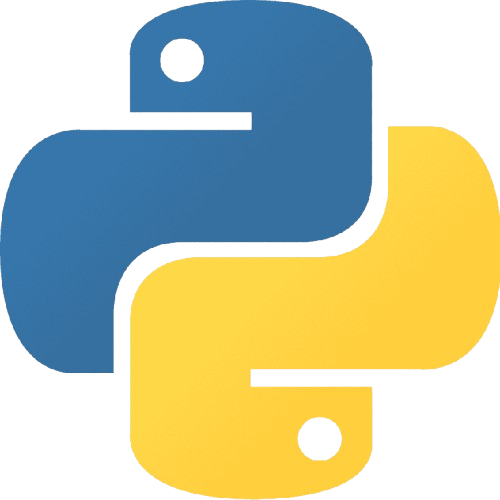

Mes projets Extra-scolaires
MCTdL
J'ai commencé par apprendre le Java pour pouvoir modifier le jeu Minecraft. J'ai utilisé la librairie Spigot pour ajouter de nouveaux modes de jeu
Ce projet est en ligne sur github: https://github.com/SuperMaxime38/MCTdL
Plus d'informations sur ce projetHTMLInterpretor
J'ai eu l'envie de créer mon propre navigateur internet en Java pure (Swing). Ce projet est assez long et j'ai commencé par développer un interpreteur HTML. Il contient donc un Lexer, Parser et Afficheur HTML ainsi qu'un Parser & Lexer CSS. À cause de la quantité d'éléments à prendre en compte, cet interpreteur ne supporte pour l'instant que quelques balises et propriétés CSS.
|  |
On peut changer la couleur du texte (baslises p, h1, etc) et afficher des images,
|
|
Voici une partie du code du Lexer qui permet de séparer le code HTML en tokens. |
 |
Ce projet est en ligne sur github: https://github.com/SuperMaxime38/HTMLInterpretor
Plus d'informations sur ce projetVideo To ASCII
Il m'était venu l'envie de faire un programme qui convertissait une image en caractères ASCII. J'ai fini par développer un programme qui convertit une vidéo classique en vidéo composée de caractères ASCII. Par un souci de vitesse, je l'ai fait en C++ avec .NET framework et OpenCV dans Visual Studio 2022.
|  |
Ci contre se trouve l'interface graphique de l'application, on peut charger une vidéo, qui s'affichera dans le lecteur à gauche. Quand on appuie sur le bouton "Convert", la vidéo chargée est traitée et chacune de ses frame est affichée dans le "lecteur" à droite. Une barre de progression indique le nombre de frames traitées sur le nombre de frales totales. |
|
Chaque frame de la vidéo est d'abord redimensionnée, sa longueur est divisée par 8 et sa hauteur par 12 pour correpondre à la taille d'un caractère.
|
Your Own Legend
Voici un de mes projets actuellement en cours de développement. Il s'agit d'un Voxel Engine, sur le même style que Minecraft. Je l'ai développé en Java à l'aide de LWJGL. Pour le moment, le jeu génère le monde "indéfiniment" avec un terrain généré à l'aide du bruit de Perlin. Le monde ne contient qu'un seul type de bloc, ce qui, à l'avenir changera. le joueur peut se déplacer dans le monde dans toutes les directions (Z,Q,S,D, SPACE, SHIFT, Mouse), j'ai rajouté une touche permettant de "courir". L'affichage est géré par OpenGL et donc par la carte graphique.
|  |
Texte |
|
Texte |
  |
Ce projet est en ligne sur github: https://github.com/SuperMaxime38/YourOwnLegend
Plus d'informations sur ce projetNarrator
Avec mes amis, pour faire un jeu de rôle, j'avais eu l'idée de faire une IA qui serait capable de servir de narrateur. N'ayant aucune connaissances en IA, j'ai dans un premier temps téléchargé le modèle Amethyst-13B-Mistral, que j'ai relié à un bot discord à l'aide de NodeJS.
|
Image |
Texte |
|
Texte |
Image |
Mes projets scolaires
Sites internet
Italien
Lors des oraux d'italien on pouvait parfois s'appuyer sur des diaporamas. Dans ces situations je faisais donc de petites pages web afin d'ajouter de l'interactibilité à ma présentation.
Voir le site original
SNT
En seconde, avec l'option SNT, nous avions fait un chapitre sur le Web et sur le HTML, CSS, etc...
À la fin de ce chapitre nous devions faire une page web sur le thême de notre choix, j'ai donc fait un site sur le thème des jeux vidéos. Ce site intégrait plusieurs autres sites de jeux.
Voir le site original
NSI
Plus récemment, en NSI, nous avons du faire un site internet à l'aide de Flask.
Nous avions pour contrainte d'utiliser du SQL dans notre site, notre groupe à donc fait une "copie" de Youtube.

Ce projet étant assez conséquent, vous pouvez retrouver les détails dans la page Plus d'informations sur ce projet
Certains de mes projets n'existait que sur mon disque dur qui s'est cassé. Ces projets sont mentionnés plus bas avec les quelques détails qu'il me reste.
SCREncodeur
J'ai développer un algorithme de chiffrement en Java. Sa difficulté de décodage vient de l'inhabitualité de l'algorithme.
Jeu 2D Java
Je me suis intéressé à la création de jeu vidéo et j'ai développé une ébauche de jeu 2D en Java.
Je l'ai fait avec Swing, la carte est une matrice en 2 dimensions contenant des entiers corresponsant aux différentes Tiles.
Le personnage pouvait bouger dans les 4 directions ainsi qu'en diagonale, il y avait des objets interactifs comme des coffres, portes, clés et bottes de vitesse.
Certains Tiles et objets avaient des collisions avec le joueur (eau, portes fermées) et il y avait une musique d'ambiance que j'ai composé sur internet.
Voici un aperçu de ce jeu:
IA
Le problème de mon bot discord précédent est l'utilisation d'un modèle d'IA assez lourd. Puisqu'il tournait en local sur mon ordinateur, il y avait un certain délai entre chaque interaction. Pour palier à cela, j'ai eu l'idée de créer moi même un modèle bien plus léger avec ses données d'entraînement basées sur l'histoire qu'il devait raconter. Ce modèle est développé en Python avec Pytorch, il suit la même architecture que GPT-2 à la différence que mon modèle ne possedait pas "d'encodeur" (voir Attention is all you need). Malheureusement, je ne lui ai pas donné un jeu de données suffisant et il lui manque des détails le rendant moins performant.
|
Image |
Texte |
|
Texte |
Image |